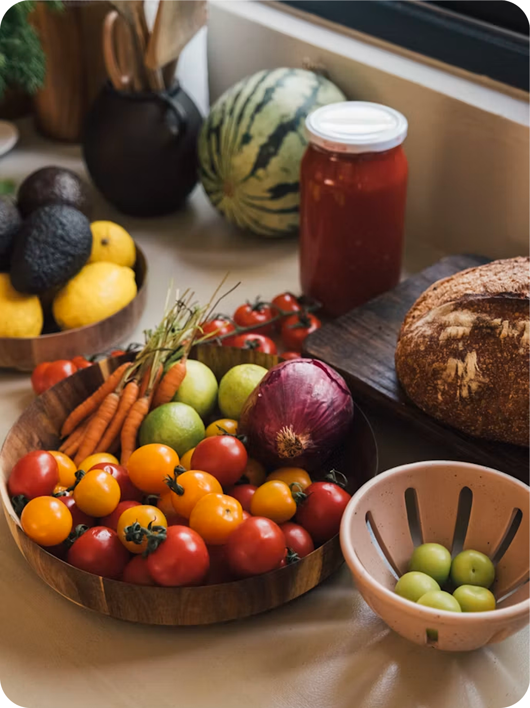

Makan Sehat
Itu Ilmu, Bukan
Privilege
Akses panduan nutrisi berbasis sains, raih pola makan seimbang, dan kembangkan gaya hidup sehat untuk semua orang. Mulai perjalanan gizimu hari ini!
Akses panduan nutrisi berbasis sains, raih pola makan seimbang, dan kembangkan gaya hidup sehat untuk semua orang. Mulai perjalanan gizimu hari ini!

Gizify hadir untuk membantumu memahami gizi dengan cara yang mudah, menyenangkan, dan relevan dengan kehidupan sehari-hari. Kami percaya bahwa informasi gizi yang tepat adalah kunci hidup sehat dan berkualitas.
Menyajikan informasi gizi berbasis sains dan mudah dipahami semua orang.
Mendukungmu membangun kebiasaan sehat yang seimbang dan berkelanjutan.
Fitur yang terhubung satu sama lain salah satu fiturnya adalah BMI.